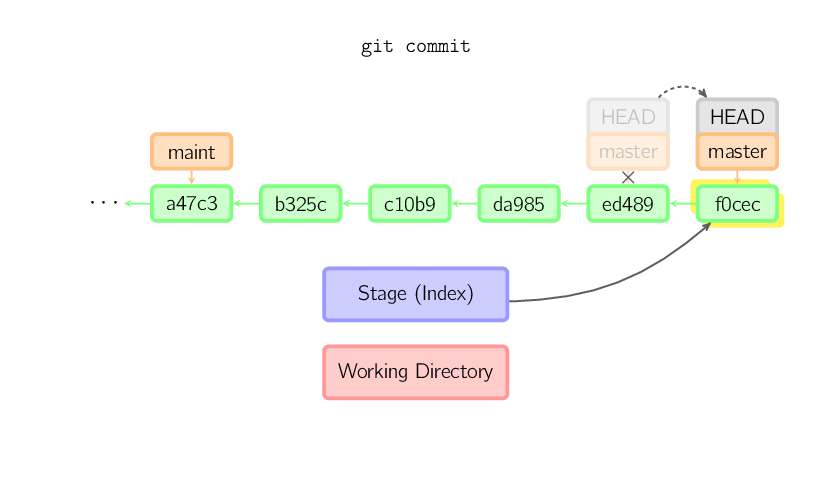
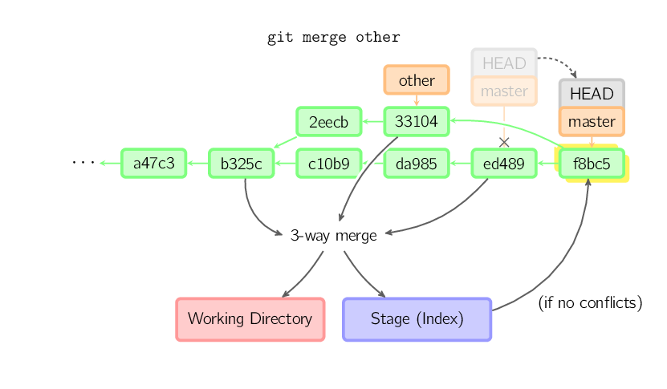

本文内容来源 ，为查找方便和防止丢失，特此备份。
git分为 工作目录、暂存目录(也叫做索引)和仓库 三个部分，git命令就是围绕着三个部分进行的。
基本用法

上面的四条命令在工作目录、暂存目录(也叫做索引)和仓库之间复制文件。
git add files把当前文件放入暂存区域。git commit给暂存区域生成快照并提交。git reset -- files用来将暂存区的文件恢复到最后一次commit时的状态。或者撤销未提交的git add操作。git checkout -- files把文件从暂存区域复制到工作目录，用来丢弃本地修改。
你可以用 git reset -p, git checkout -p, or git add -p进入交互模式。
也可以跳过暂存区域直接从仓库取出文件或者直接提交代码。

git commit -a相当于运行git add把所有当前目录下的文件加入暂存区域再运行git commit。git commit files进行一次包含最后一次提交加上工作目录中文件快照的提交。并且文件被添加到暂存区域。git checkout HEAD -- files将工作目录和暂存区都同步到仓库最后一次被提交的状态。
约定
后文中以下面的形式使用图片。

绿色的5位字符表示提交的ID，分别指向父节点。分支用橘色显示，分别指向特定的提交。当前分支由附在其上的HEAD标识。
这张图片里显示最后5次提交，ed489是最新提交。 master分支指向此次提交，另一个maint分支指向祖父提交节点。
命令详解
Diff
有许多种方法查看两次提交之间的变动。下面是一些示例。
1 | git diff |

Commit
提交时，git用暂存区域的文件创建一个新的提交，并把此时的节点设为父节点。然后把当前分支指向新的提交节点。下图中，当前分支是master。
在运行命令之前，master指向ed489，提交后，master指向新的节点f0cec并以ed489作为父节点。

即便当前分支是某次提交的祖父节点，git会同样操作。下图中，在master分支的祖父节点maint分支进行一次提交，生成了1800b。
这样，maint分支就不再是master分支的祖父节点。此时，合并 (或者 衍合) 是必须的。

如果想更改一次提交，使用 git commit --amend。git会使用与当前提交相同的父节点进行一次新提交，旧的提交会被取消。

另一个例子是分离HEAD提交,后文讲。
Checkout
checkout命令用于从历史提交（或者暂存区域）中拷贝文件到工作目录，也可用于切换分支。
当给定某个文件名（或者打开-p选项，或者文件名和-p选项同时打开）时，git会从指定的提交中拷贝文件到暂存区域和工作目录。比如，git checkout HEAD~ foo.c会将提交节点HEAD~(即当前提交节点的父节点)中的foo.c复制到工作目录并且加到暂存区域中。（如果命令中没有指定提交节点，则会从暂存区域中拷贝内容。）注意当前分支不会发生变化。

当不指定文件名，而是给出一个（本地）分支时，那么HEAD标识会移动到那个分支（也就是说，我们“切换”到那个分支了），然后暂存区域和工作目录中的内容会和HEAD对应的提交节点一致。新提交节点（下图中的a47c3）中的所有文件都会被复制（到暂存区域和工作目录中）；只存在于老的提交节点（ed489）中的文件会被删除；不属于上述两者的文件会被忽略，不受影响。

如果既没有指定文件名，也没有指定分支名，而是一个标签、远程分支、SHA-1值或者是像_master~3_类似的东西，就得到一个匿名分支，称作detached HEAD（被分离的HEAD标识）。这样可以很方便地在历史版本之间互相切换。比如说你想要编译1.6.6.1版本的git，你可以运行git checkout v1.6.6.1（这是一个标签，而非分支名），编译，安装，然后切换回另一个分支，比如说git checkout master。然而，当提交操作涉及到“分离的HEAD”时，其行为会略有不同，详情见在下面。

HEAD标识处于分离状态时的提交操作
当HEAD处于分离状态（不依附于任一分支）时，提交操作可以正常进行，但是不会更新任何已命名的分支。(你可以认为这是在更新一个匿名分支。)

一旦此后你切换到别的分支，比如说master，那么这个提交节点（可能）再也不会被引用到，然后就会被丢弃掉了。注意这个命令之后就不会有东西引用2eecb。

但是，如果你想保存这个状态，可以用命令git checkout -b name来创建一个新的分支。

Reset
reset命令把当前分支指向另一个位置，并且有选择的变动工作目录和索引。也用来在从历史仓库中复制文件到索引，而不动工作目录。
如果不给选项，那么当前分支指向到那个提交。如果用--hard选项，那么工作目录也更新，如果用--soft选项，那么都不变。

如果没有给出提交点的版本号，那么默认用HEAD。这样，分支指向不变，但是索引会回滚到最后一次提交，如果用--hard选项，工作目录也同样。
如果给了文件名(或者 -p选项), 那么工作效果和带文件名的checkout差不多，除了索引被更新。

Merge
merge 命令把不同分支合并起来。合并前，索引必须和当前提交相同。如果另一个分支是当前提交的祖父节点，那么合并命令将什么也不做。
另一种情况是如果当前提交是另一个分支的祖父节点，就导致_fast-forward_合并。指向只是简单的移动，并生成一个新的提交。

否则就是一次真正的合并。默认把当前提交(ed489 如下所示)和另一个提交(33104)以及他们的共同祖父节点(b325c)进行一次三方合并。结果是先保存当前目录和索引，然后和父节点33104一起做一次新提交。

Cherry Pick
cherry-pick命令”复制”一个提交节点并在当前分支做一次完全一样的新提交。

Rebase
衍合是合并命令的另一种选择。合并把两个父分支合并进行一次提交，提交历史不是线性的。衍合在当前分支上重演另一个分支的历史，提交历史是线性的。
本质上，这是线性化的自动的 cherry-pick

上面的命令都在topic分支中进行，而不是master分支，在master分支上重演，并且把分支指向新的节点。注意旧提交没有被引用，将被回收。
要限制回滚范围，使用--onto选项。下面的命令在master分支上重演当前分支从169a6以来的最近几个提交，即2c33a。

同样有git rebase --interactive让你更方便的完成一些复杂操作，比如丢弃、重排、修改、合并提交。没有图片体现这些，细节看这里:git-rebase(1)
原文链接：http://marklodato.github.io/visual-git-guide/index-zh-cn.html?no-svg